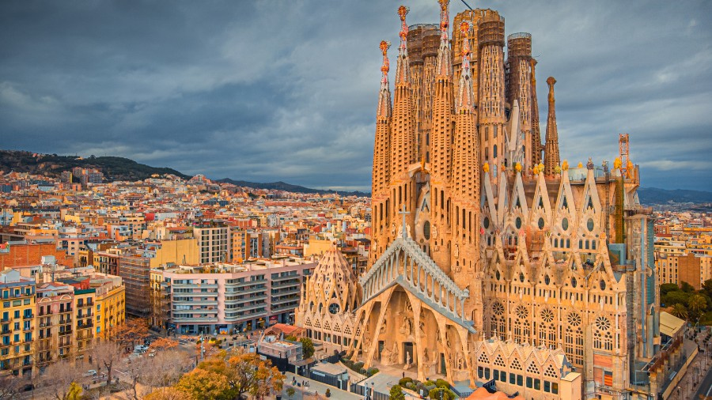
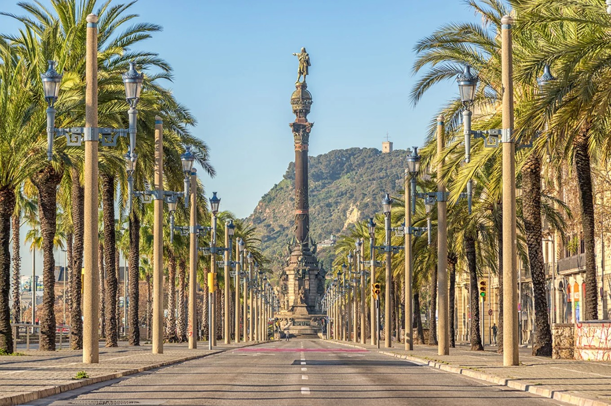

Dlaczego warto odwiedzić Barcelonę?
Barcelona to niezwykłe miasto, które tętni życiem przez całą dobę. Jest stolicą regionu Katalonia i leży nad samym morzem. Słynie na całym świecie z niesamowitej sztuki, pięknych uliczek i genialnego klimatu, który przyciąga miliony turystów.

Niezwykła Sagrada Familia
To chyba najbardziej znany kościół na świecie, który projektował słynny Antoni Gaudi. Co ciekawe, jego budowa trwa już ponad 140 lat i wciąż się nie skończyła! Wieże i rzeźby na ścianach robią ogromne wrażenie.

Więcej o tej niesamowitej świątyni przeczytasz na Wikipedii.
Magiczny Park Guell
Kolejne bajkowe miejsce stworzone przez Gaudiego. Znajduje się na wzgórzu, skąd widać całe miasto. Pełno tu kolorowych mozaik, dziwnych kształtów i słynna rzeźba wielkiej jaszczurki, przy której każdy robi sobie zdjęcie.
Wspaniały Park Ciutadella
Oaza zieleni w samym sercu Barcelony. Najbardziej niesamowitym punktem parku jest Cascada Monumental – potężna, barokowa fontanna z rzeźbami i wodospadem, zaprojektowana przy współpracy z młodym Antonim Gaudim.

Słynny deptak La Rambla
To główna i najbardziej zatłoczona ulica w Barcelonie. Ciągnie się od wielkiego placu aż do samego portu. Można tu spotkać ulicznych artystów, kupić pamiątki i zjeść coś dobrego w lokalnych knajpkach.
